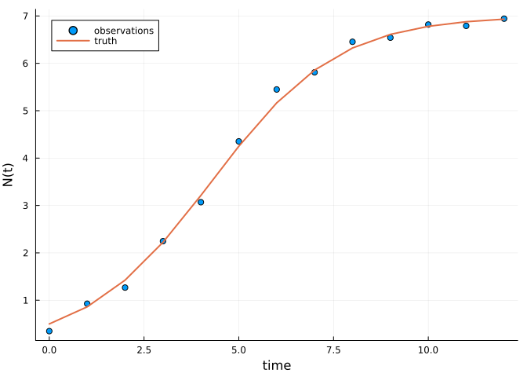
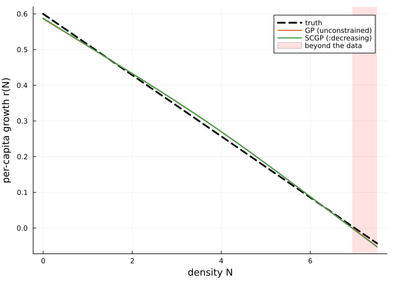

Shape-Constrained Gaussian Processes
Overview
ShapeConstrainedGPApproximator puts a Gaussian-process prior on an unknown function and reparameterizes its inducing values so that a shape constraint holds at the inducing points. It accepts the same fourteen constraints as the shape-constrained spline (SHAPE_CONSTRAINTS), so a per-capita growth rate can be required to decrease, a functional response to increase and saturate, and so on.
The honest framing matters here, so it comes first:
The reparameterization enforces the constraint at the inducing points. It does not guarantee the constraint between them. Use
check_constraintsto audit the fitted function on a dense grid rather than assuming.
That is not a caveat invented for this vignette — it is a measured property of the evaluator, and the package ships check_constraints precisely because of it.
using PartiallySpecifiedModels
using OrdinaryDiffEq
using Plots; default(fmt=:png)
using Random
Random.seed!(7)TaskLocalRNG()Density dependence, which must decrease
Per-capita growth falling with density is about as well-established as ecological monotonicity gets:
r_true(N) = 0.6 * (1.0 - N / 7.0)
f_true!(du, u, p, t) = (du[1] = r_true(u[1]) * u[1])
st = solve(ODEProblem(f_true!, [0.5], (0.0, 12.0)), Tsit5(); saveat=1.0)
ts = collect(st.t)
Y = reshape([st(t)[1] for t in ts] .+ 0.12 .* randn(length(ts)), :, 1)
scatter(ts, Y[:,1], label="observations", ms=4, xlabel="time", ylabel="N(t)")
plot!(ts, [st(t)[1] for t in ts], lw=2, label="truth")
The series is deliberately short and stops well before carrying capacity, so the fitted function must be extrapolated across the upper half of its domain — which is where an unconstrained smooth is least trustworthy.
Constrained against unconstrained
dyn!(du, u, p, t) = (du[1] = p.r(u[1]) * u[1])
mk(app) = PSMProblem(dyn!, [0.5], (0.0, 12.0), [app];
data_times=ts, data_values=Y, obs_to_state=[1],
known_params=NamedTuple(), likelihood=Gaussian(), solver=Tsit5())
gp = GPApproximator(:r, (0.0, 7.5), 14; initial = x -> 0.3)
scgp = ShapeConstrainedGPApproximator(:r, (0.0, 7.5), 14, :decreasing;
initial = x -> 0.3)
sol_gp = solve(mk(gp), LAML(maxiters=40, verbose=false))
sol_scgp = solve(mk(scgp), LAML(maxiters=40, verbose=false))
gx = collect(range(0.0, 7.5, length=201))
err(s) = maximum(abs.(s.unknown_functions[:r].(gx) .- r_true.(gx)))
(; gp_loss = sol_gp.data_loss, gp_edf = sol_gp.edf, gp_err = err(sol_gp),
sc_loss = sol_scgp.data_loss, sc_edf = sol_scgp.edf, sc_err = err(sol_scgp))(gp_loss = 0.15349581189074105, gp_edf = 2.642077121779458, gp_err = 0.01394434232464048, sc_loss = 0.15451572204595218, sc_edf = 2.6320253899979575, sc_err = 0.012665851144280038)The two fits are close to indistinguishable in fit quality, and the constrained one recovers the truth slightly better across the full domain. That is the honest result and it is worth stating plainly: when the data already imply the shape, the constraint costs almost nothing. It is insurance, not a repair — you buy it for the cases where the data are thinner or noisier than you expected, and you pay a fraction of a percent of fit for it here.
plot(gx, r_true.(gx), lw=3, ls=:dash, c=:black, label="truth")
plot!(gx, sol_gp.unknown_functions[:r].(gx), lw=2, label="GP (unconstrained)")
plot!(gx, sol_scgp.unknown_functions[:r].(gx), lw=2, label="SCGP (:decreasing)")
vspan!([maximum(Y), 7.5], alpha=0.12, c=:red, label="beyond the data")
xlabel!("density N"); ylabel!("per-capita growth r(N)")
Auditing the constraint
Do not take the constraint on trust — check it:
chk_gp = check_constraints(sol_gp.unknown_functions[:r], :decreasing,
(0.0, 7.5); grid_size=201)
chk_scgp = check_constraints(sol_scgp.unknown_functions[:r], :decreasing,
(0.0, 7.5); grid_size=201)
(; unconstrained = (chk_gp.satisfied, chk_gp.worst_relative),
constrained = (chk_scgp.satisfied, chk_scgp.worst_relative))(unconstrained = (true, 0.0), constrained = (true, 0.0))check_constraints also has a solution-level method, check_constraints(sol, prob), which audits every shape-checkable approximator in a problem at once and warns on violations — worth calling routinely rather than only when something looks wrong.
When to use ShapeConstrainedGPApproximator
- You want a GP’s smoothness behaviour and a qualitative biological constraint, and are willing to verify the constraint rather than assume it.
- You expect to evaluate the fitted function outside the range the data cover, where an unconstrained smooth reverts toward its prior mean.
- If you want the constraint enforced exactly everywhere by construction,
ShapeConstrainedBSplineApproximatoris the stronger guarantee: its B-spline basis is a convex hull of its coefficients, so a monotone coefficient vector gives a monotone function on the whole domain.
References
- Riihimäki, J. & Vehtari, A. (2010). Gaussian processes with monotonicity information. AISTATS 9:645–652.
- Pya, N. & Wood, S.N. (2015). Shape constrained additive models. Statistics and Computing 25:543–559.